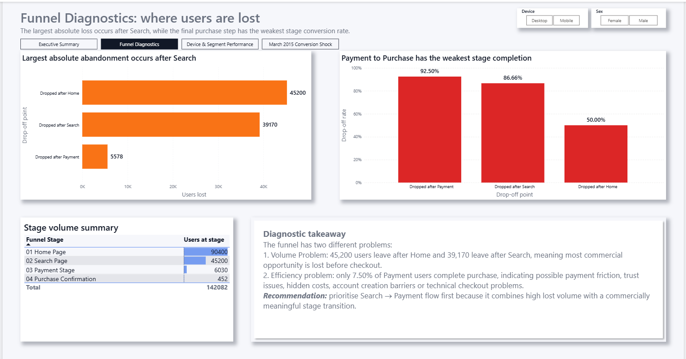
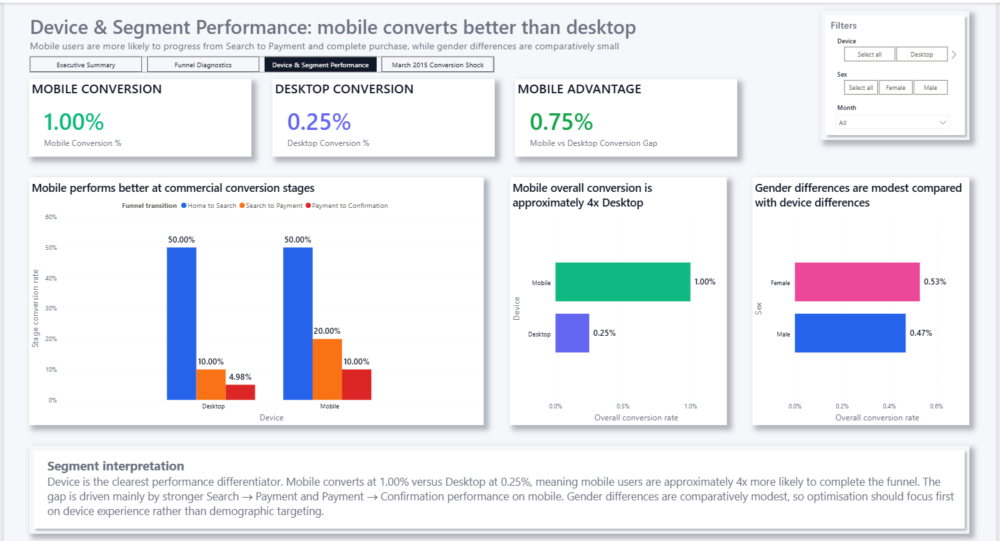
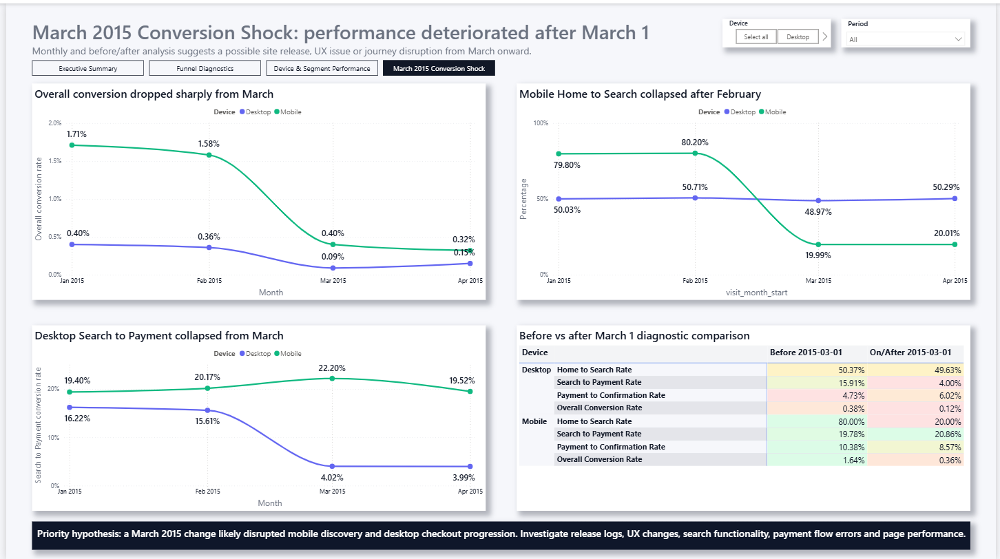

Executive Summary
Highlights the headline funnel metrics, overall conversion rate and key commercial interpretation for stakeholders.
An end-to-end SQL Server and Power BI project analysing how users move through an e-commerce conversion journey, from landing on the Home Page to completing a purchase.
This project analysed an e-commerce conversion funnel to understand where users drop off, how conversion performance differs by segment, and how user progression changes over time.
The analysis showed that only 0.50% of users completed the full funnel. The largest losses occurred before checkout, while a sharp deterioration from March 2015 suggested a possible product, user experience, tracking or technical issue affecting the customer journey.
Highlights the headline funnel metrics, overall conversion rate and key commercial interpretation for stakeholders.

Identifies where users are lost across the journey and distinguishes between high-volume drop-off and weak stage efficiency.

Compares mobile and desktop performance, showing that device experience is a key driver of conversion differences.

Explores the sharp deterioration in funnel performance from March 2015 onward, supporting a deeper diagnostic business interpretation.
Funnel analysis is highly relevant to e-commerce, marketing analytics and product performance because it helps businesses understand where potential customers are lost before conversion.
This project shows how SQL Server and Power BI can be used together to move from raw data to commercial insight: modelling the user journey, calculating conversion metrics, diagnosing weak points and presenting recommendations that could support better business decisions.